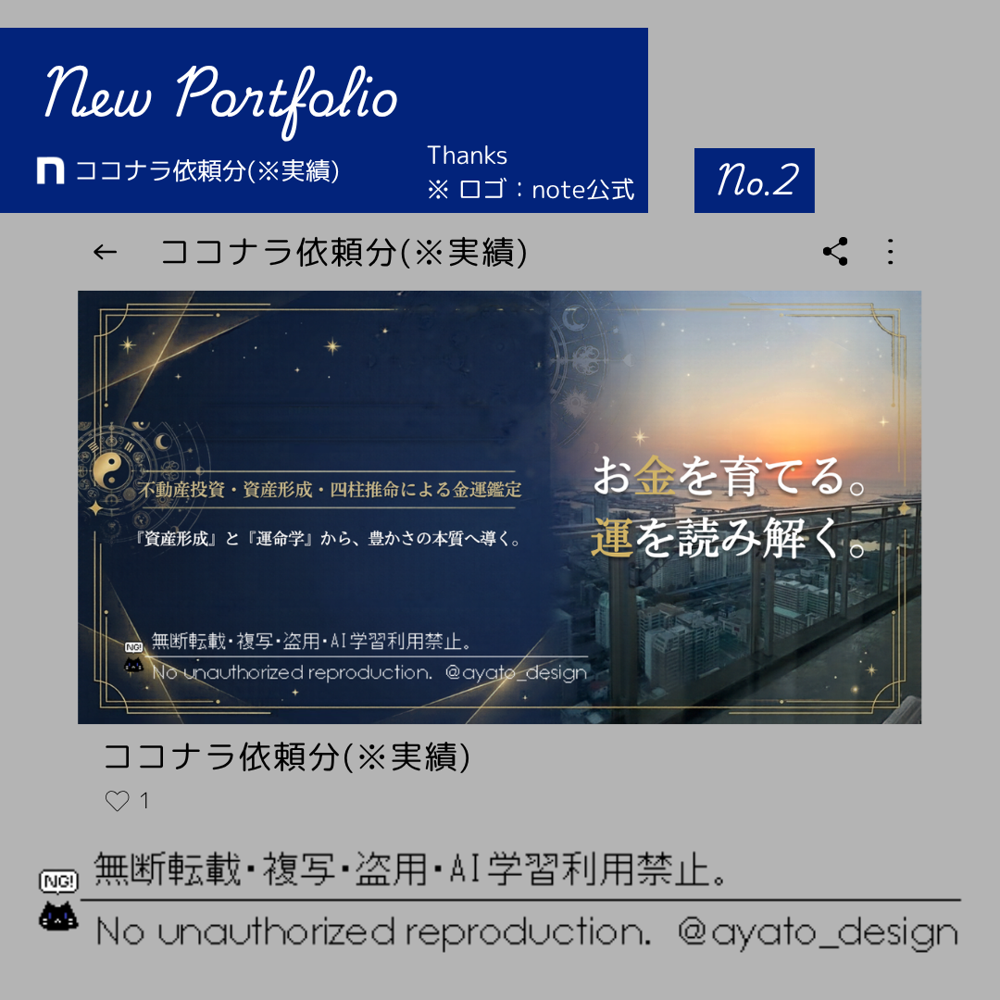
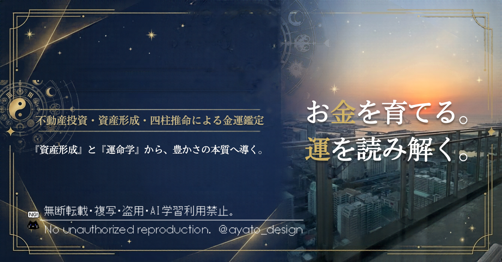

noteのヘッダー画像
Tag
- Clientwork
- Design
- note
ココナラで依頼分のヘッダー画像を作成しました。
※現物はクォーターマーク、ご依頼通りのものをお渡し済。
・ネイビーをベースに、ゴールドでアクセント(+補色でホワイト)
・都会的な高層マンションや美しい街並み
・資産形成や豊かさを連想させるモチーフ
・星や月、暦など、運命学を感じさせるモチーフ
・知的で上品、高級感のあるデザイン
・金融、投資の信頼感と、四柱推命・東洋占術の神秘的な雰囲気を融合
・占いのかわいらしさを前面に出すのではなく、大人向けの落ち着いたデザイン
のご依頼で、レイアウトを考慮して作成。
今回はクリエイタートップ用の画像なので、note規定の表示位置に文字を寄せています。
製作情報
- 制作時間：約30分
- 制作ツール：Canva
- 完成日：2026.11.19